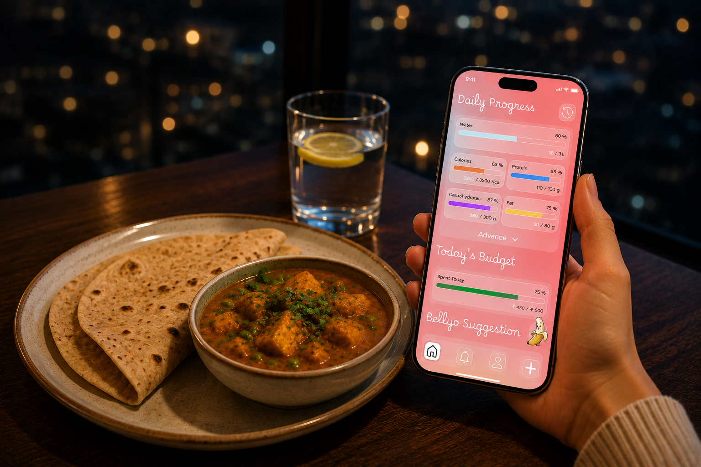
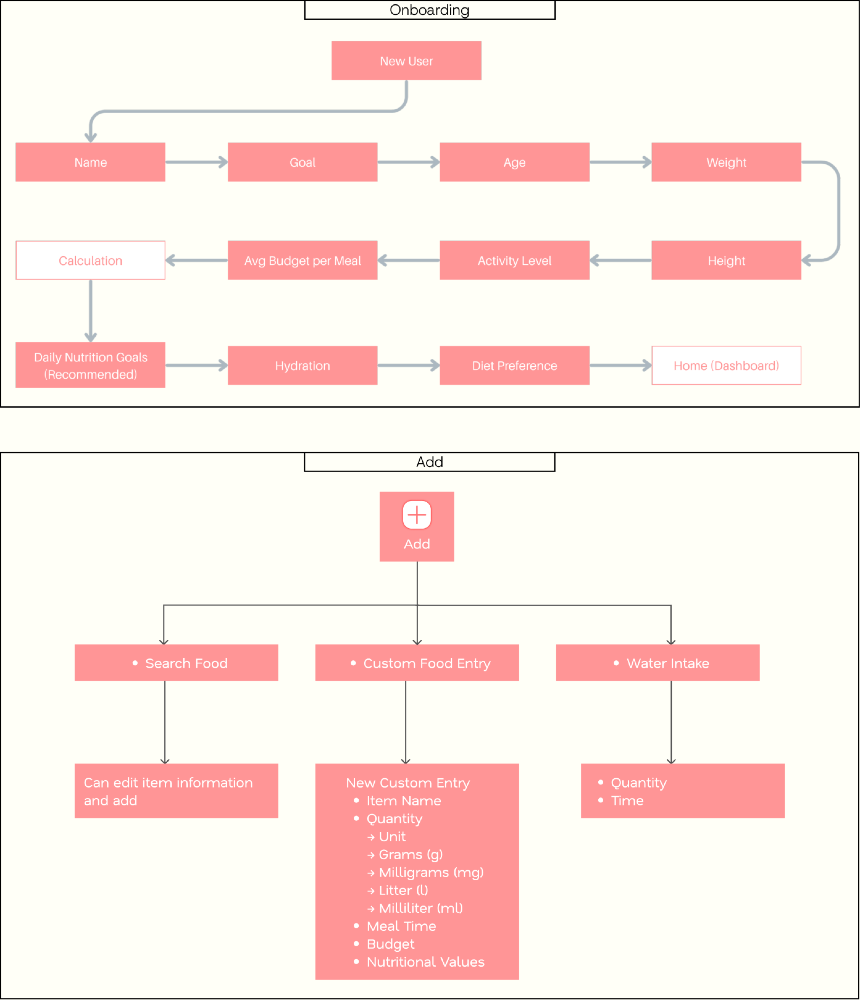
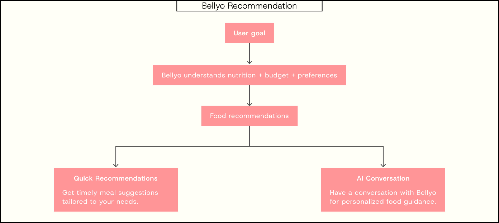
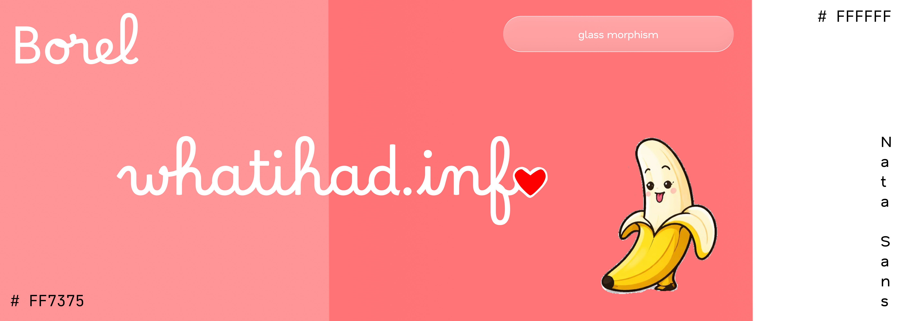
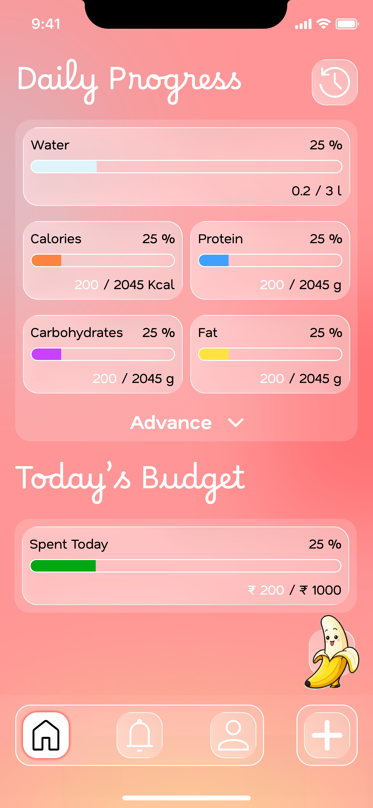
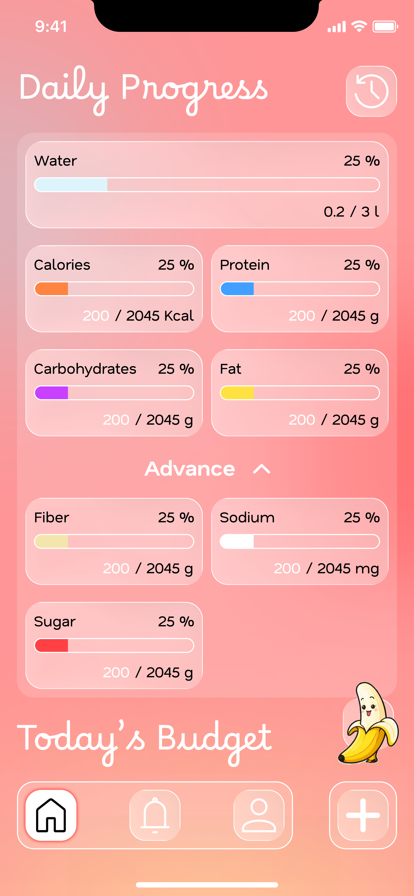
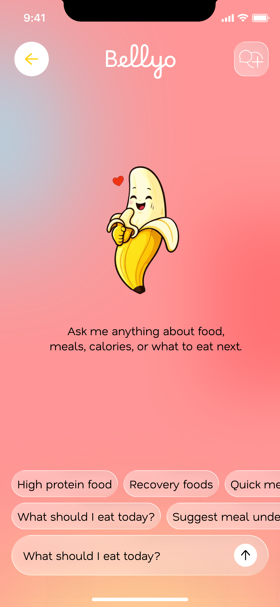
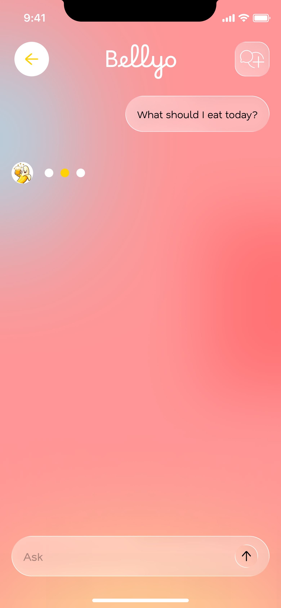
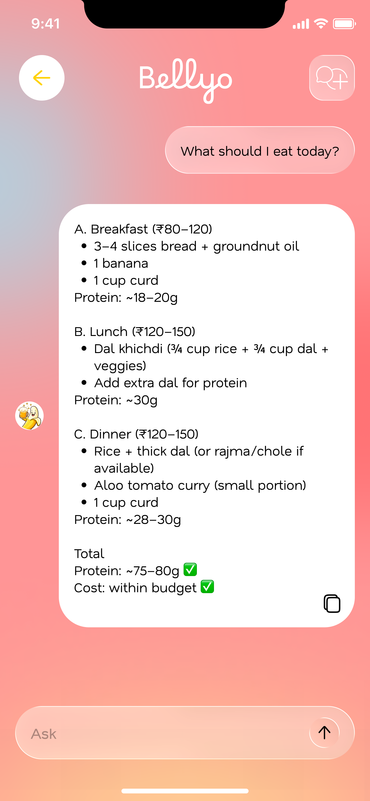

Too much nutrition data
Existing apps expose users to complex nutritional information, focused on calorie intake.

Healthy eating shouldn't ignore affordability.
Most nutrition apps focus heavily on calorie tracking while overlooking whether healthier choices are affordable and practical for everyday users.
Existing apps expose users to complex nutritional information, focused on calorie intake.
Most products prioritize calorie counting over practical food decisions.
Food choices are rarely connected to their real-world cost.
Users need food suggestions that reflect local availability and pricing.
Users don't need more nutrition data. They need better food decisions.
Users need a small set of actionable nutrition metrics.
Affordability should be part of the food decision.
AI should help users decide what to eat, not simply provide information.
Users wanted recommendations tailored to their needs and budget.
Nutrition Tracking
What did I eat?Food Cost
Can I afford it?Bellyo AI
What should I eat next?8 basics that matter
The information architecture was designed around daily progress, tracking food, managing personal goals, reviewing history, and getting recommendations.

How might we make AI-powered nutrition guidance feel approachable, engaging, and trustworthy for everyday users?
I created Bellyo as a friendly banana mascot because it is recognizable, naturally associated with nutrition, and gives the AI a more approachable personality.

Simple visual hydration tracking.
Add foods that aren't available in the database.
Review food and nutrition activity over time.
I initially explored glassmorphism extensively, but found that using it throughout the interface added unnecessary visual complexity and performance overhead. I reduced it to intentional areas where it supported the experience.

Personalizing the experience around each user’s goals, budget, and lifestyle.
Brings daily nutrition, budget, meals, and Bellyo recommendations into one place.


Makes food and water logging quick through search, custom entries, and hydration tracking.
Personalized food guidance through quick recommendations and conversation.



Complex information doesn't need a complex interface.
Designing whatihad.info taught me that simplicity is less about removing information and more about deciding what users actually need to make a decision.
The biggest challenge was balancing nutrition, affordability and AI without allowing any one of them to overwhelm the core experience.
I also learned to balance visual exploration with usability and technical constraints, especially when moving from concepts toward an MVP.
Good product design doesn't make complex information disappear. It makes the right information easier to understand and act on.